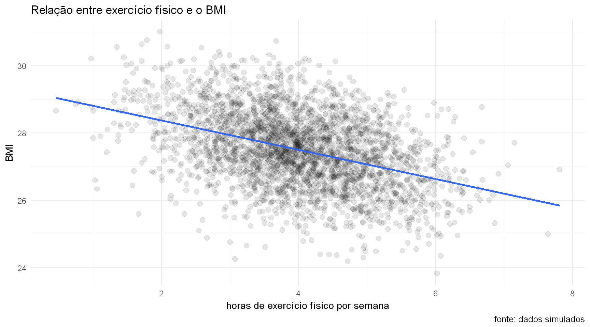
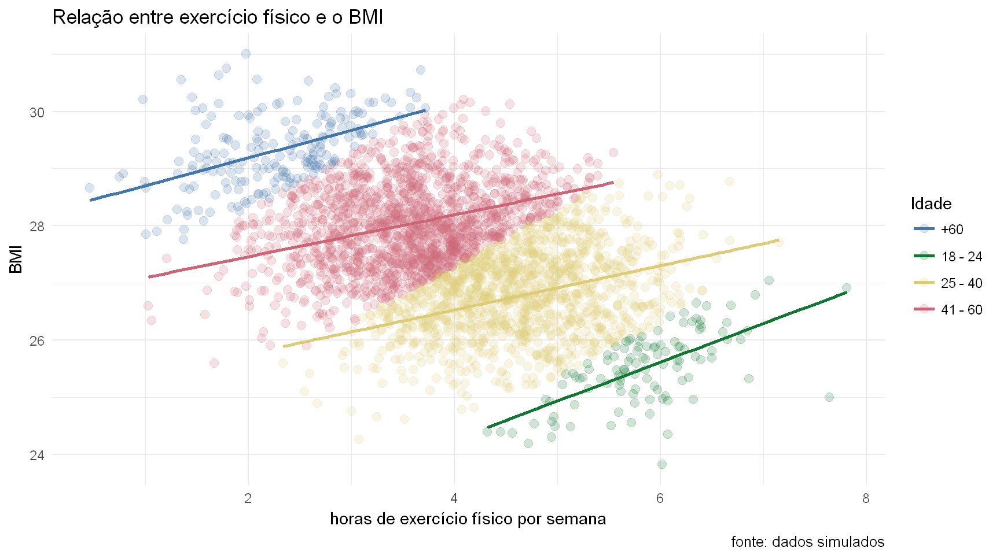
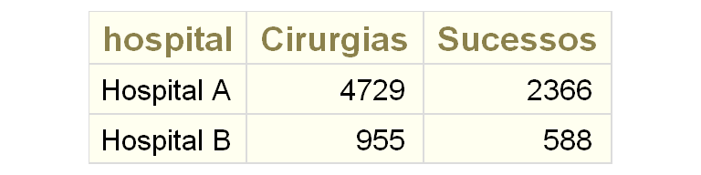
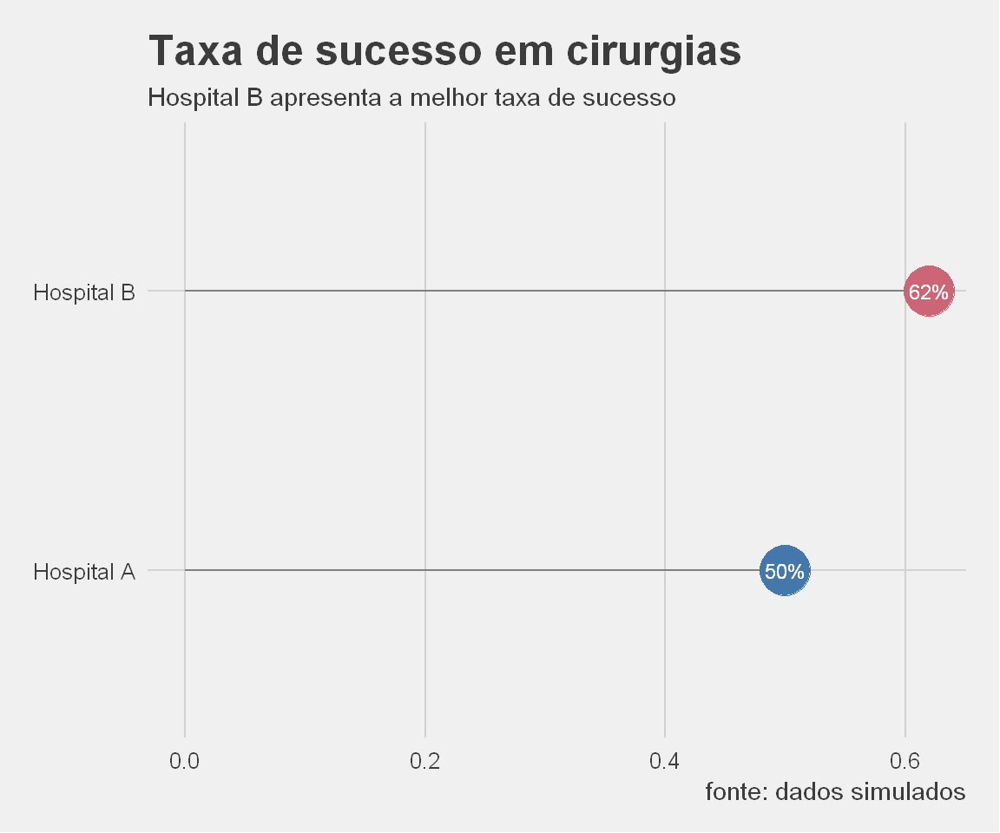
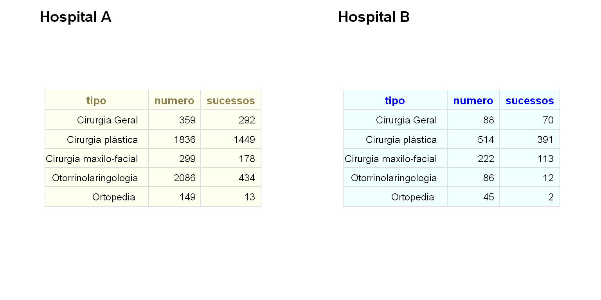
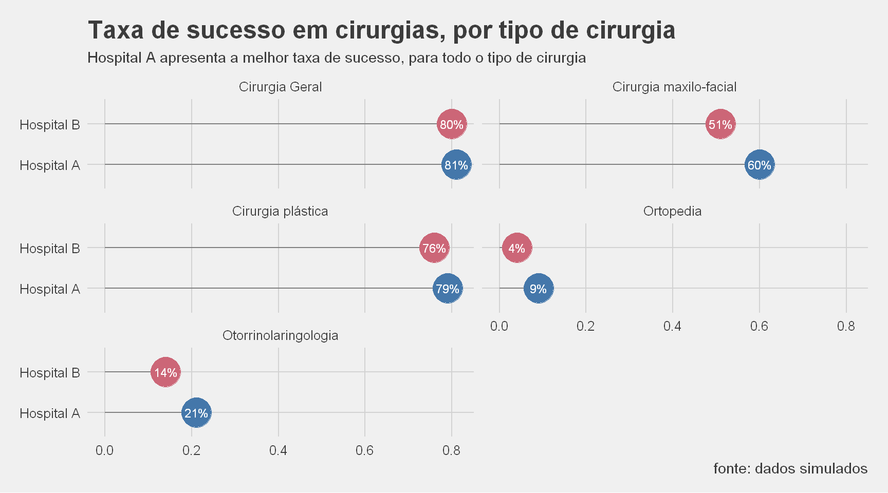

By António Cruz | March 30, 2017
Exercício físico e BMI
Vamos supor que estamos a tentar perceber a relação entre o número de horas de exercício físico por semana e o BMI (Body Mass Index).
Para efeito da nossa análise reunimos os dados de 3000 pessoas, pertencentes a diferentes grupos etários.
Vamos visualizar os dados:

Muito bem. Parece que quanto maior for o número de horas de exercício físico que fazemos por semana, menor o BMI, i.e., existe uma relação negativa entre o exercício e o BMI.
Podemos inclusive confirmar pela reta de regressão que a cada hora adicional de exercício físico por semana o BMI varia em -0.4358175 pontos.
Faz sentido, certo? Quanto mais exercício, menor o BMI.
Será que o comportamento é o mesmo se fizermos, para os mesmos dados, esta análise por grupo etário?
Vamos visualizar os dados:

O quê? A relação agora mudou. Para cada grupo etário o que temos é que o BMI aumenta quando o exercício físico aumenta.
Lembro que os dados são exatamente os mesmos da primeira análise que fizemos.
Podemos também aqui confirmar, por cada uma das retas de regressão por grupo etário o que acontece ao BMI quando o exercício físico aumenta.
| Idade | slope |
|---|---|
| 18 - 24 | 0.48 |
| 25 - 40 | 0.39 |
| 41 - 60 | 0.37 |
| +60 | 0.48 |
Podemos verificar que, para todas as idades, a variação do BMI por cada 1 hora a mais de exercício físico por semana, é positiva.
Como é possível?
Paradoxo de Simpson
Isto é explicado pelo paradoxo de Simpson, por vezes referido nas áreas da epidemiologia e da investigação clinica.
O paradoxo de Simpson é descrito como “uma tendência que aparece em diferentes grupos mas que desaparece ou é invertida quando os grupos são analisados em conjunto”.
Aparentemente este fenómeno foi descoberto em 1934 por dois filósofos americanos mas foi apenas em 1951 que o estatístico britânico Edward H. Simpson chamou a atenção para este paradoxo e foi quem observou a sua relação com a inversão da desigualdade acima mencionada.
No seu livro “Causality”, Judea Pearl faz uma afirmação ainda mais poderosa relativamente ao paradoxo de Simpson: “Any statistical relationship between two variables may be reversed by including additional factors in the analysis.” [Pearl2009].
Porque é que isto é importante? Porque podemos tirar conclusões erradas que levem a decisões igualmente erradas com prováveis impactos negativos na nossa organização.
E para ficarem descansados, ou não, isto não acontece apenas em dados simulados. Existem muitas situações reais onde se verifica precisamente esta situação.
Casos reais do paradoxo de Simpson
Desde o ano 2000 que a mediana dos salários nos USA tem aumentado 1% ao ano, ajustado da inflação.
Mas no mesmo período a mediana dos salários para pessoas que abandonaram a escola precocemente, com a escolaridade obrigatória, com frequência universitária e com licenciaturas, diminuiu! Isto é, em todos os subgrupos por escolaridade, os salários diminuíram.
O caso mais conhecido de um exemplo do paradoxo de Simpson aconteceu em 1973 quando a universidade da Califórnia foi processada por descriminação sexual na admissão de alunos. Os números pareciam bastante incriminatórios: 44% dos homens que se candidataram foram aceites mas apenas 35% das mulheres tiveram a mesma sorte.
Mas quando os investigadores olharam para as evidências, descobriram algo surpreendente: Se fosse feita uma desagregação por departamento, existia um pequeno, mas estatisticamente significativo, enviesamente a favor das mulheres.
O que aconteceu foi que a mulheres se candidatavam mais aos departamentos de humanidades e os homens aos da ciência e existiam mais candidatos para os departamentos de ciências.
Melhores hospitais para realizar uma cirurgia
Por último, vou dar um exemplo que podia servir a cada um de nós. Vamos supor que vamos ser operados e queremos escolher o melhor hospital, i.e., o hospital com maior taxa de sucesso em cirurgias.
O quadro seguinte mostra os dados que recolhemos:
Calculando a taxa de sucesso para cada hospital, temos o seguinte gráfico:

Claramente o Hospital B apresenta a melhor taxa de sucesso em cirurgias. Certo? Era esse o hospital que iriamos escolher, certamente.
Mas nós agora já sabemos mais qualquer coisa, sabemos o que é o paradoxo de Simpson. Só para descargo de consciência vamos analisar a taxa de sucesso por tipo de cirurgia.
A tabela anterior apresentada, por hospital, quando detalhada por tipo de cirurgia apresenta os seguintes valores:

Tal como fizemos por hospital, vamos verificar a taxa de sucesso por tipo de cirurgia e hospital:

E esta hem? E agora, qual o hospital que vocês escolhiam?